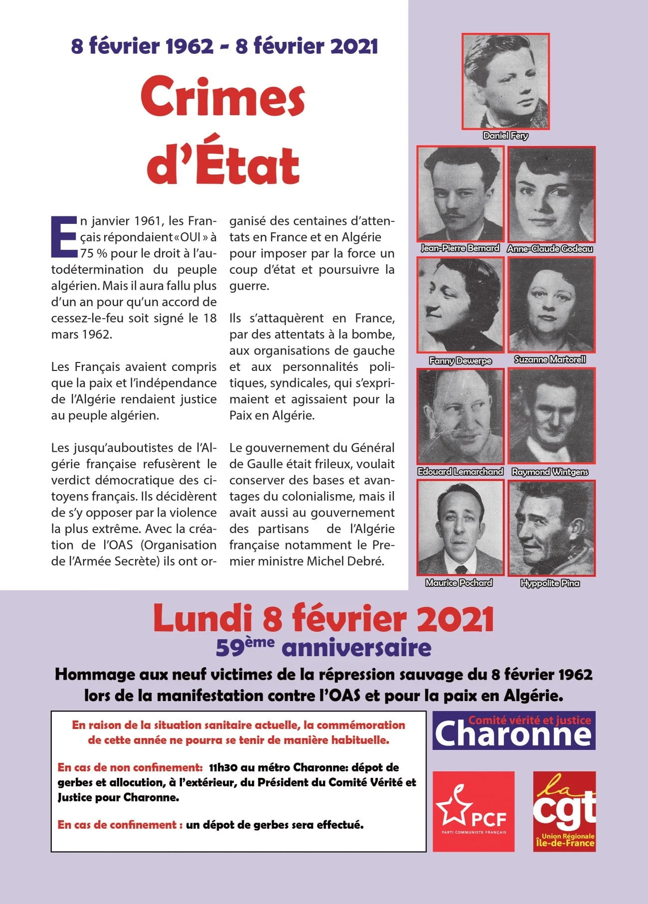
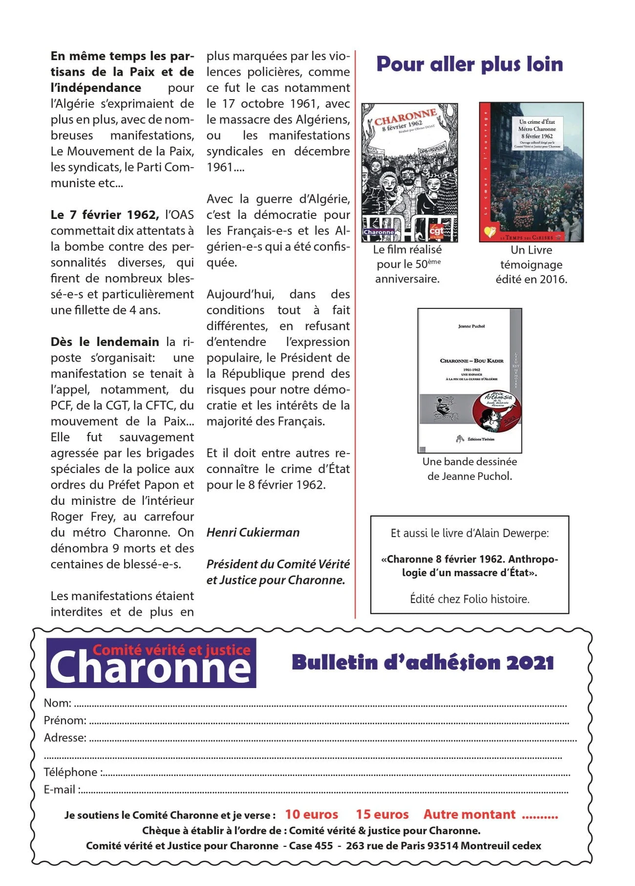

Mémoire
Charonne. Se souvenir des victimes du 8 février 1962
Date indiquée par Facebook · 8 février 2021
Repères éditoriaux
Nous avons rappelé, pour le 59e anniversaire, la mémoire des victimes de la répression du 8 février 1962. L’appel diffusé un an plus tard prolonge ce travail.
Texte conservé avec la publication
8 février 1962 - 8 février 2021 SE SOUVENIR DE CHARONNE
59ème anniversaire des assassinats de Charonne, perpétrés par les brigades spéciales de la police. 9 travailleurs syndiqués de la CGT dont 8 étaient membres du Parti Communiste Français assassinés sur ordre de Papon, alors préfet de police, lors de la manif contre l'OAS et pour la paix en Algérie.
Comme chaque année, un hommage sera rendu aux 9 victimes de cette répression sauvage du 8 février 1962.
Se souvenir de Charonne.


Sources
Archive rouge · export Facebook · AR-0002-FB-02071
À lire aussi · Charonne. L’appel à commémorer le 60e anniversaire du massacre